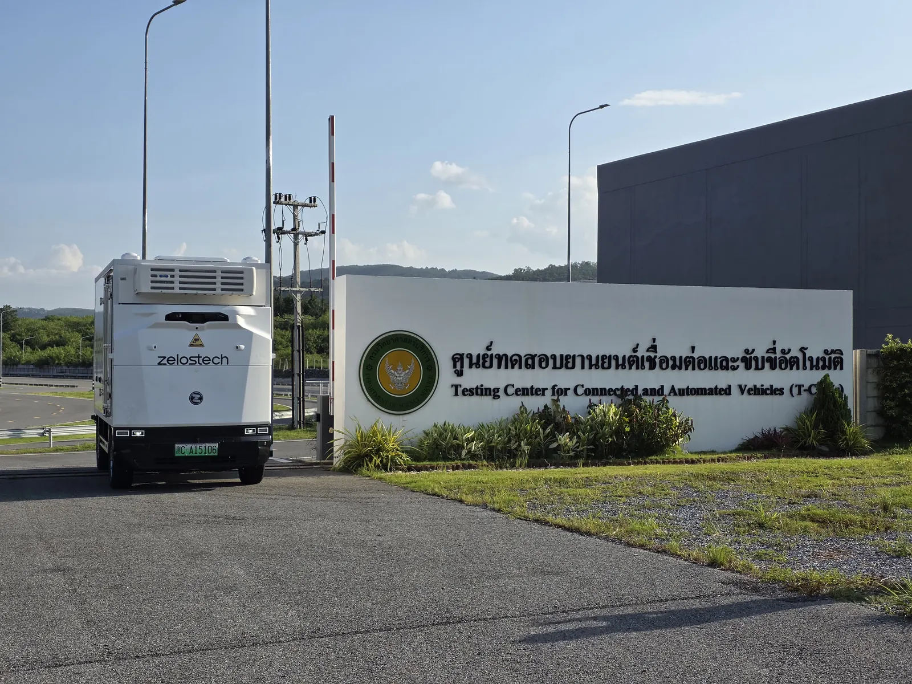
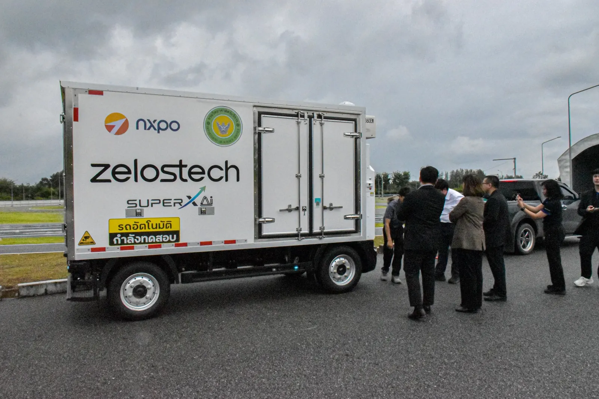
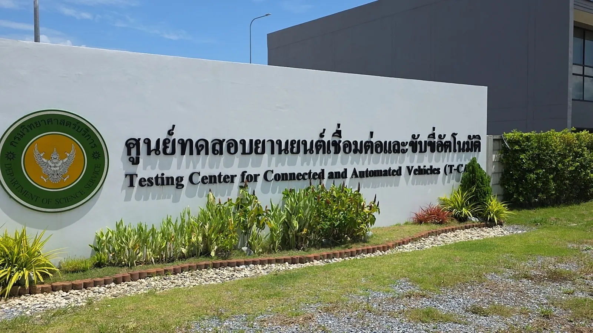

ศูนย์ทดสอบยานยนต์เชื่อมต่อและอัตโนมัติ (T-CAV)网联与自动驾驶汽车测试中心（T-CAV）Testing Center for Connected and Automated Vehicles (T-CAV)
ทดสอบและวางแผนการนำเส้นทางวิ่งรถไร้คนขับในเขตนวัตกรรมระเบียงเศรษฐกิจพิเศษภาคตะวันออก (EECi) เพื่อเป็นโครงการนำร่อง
在东部经济走廊创新区（EECi）测试并规划无人车运行路线，作为试点项目。
Testing and planning autonomous routes in the Eastern Economic Corridor of Innovation (EECi) as a pilot project.
ในเดือนกันยายน 2569 กรมวิทยาศาสตร์บริการ (วศ.) ทดสอบยานยนต์ไร้คนขับระดับ 4 ครั้งแรกของไทยที่ศูนย์ T-CAV ด้วยรถ Z5 และ Z10 ผ่านสถานการณ์จำลองกว่า 20 รูปแบบที่สะท้อนสภาพถนนไทย
2026 年 9 月，泰国科学服务厅在 T-CAV 中心使用 Z5 与 Z10 完成泰国首次 L4 级无人车测试，涵盖 20 余种贴近泰国路况的模拟场景。
In September 2026, Thailand’s Department of Science Service ran the country’s first Level 4 vehicle tests at T-CAV with Z5 and Z10 vans, across more than 20 simulated scenarios reflecting Thai road conditions.
- สถานที่地点Location
- ศูนย์ T-CAV กรมวิทยาศาสตร์บริการ จ.ระยองT-CAV 中心（泰国科学服务厅），罗勇府T-CAV, Department of Science Service, Rayong
- ขอบเขตงาน项目内容Scope
- ทดสอบและวางแผนเส้นทางวิ่งรถไร้คนขับ无人车路线测试与规划Route testing and planning
- รถที่ใช้使用车型Vehicles
- RoboVan Z5 และ Z10RoboVan Z5 与 Z10RoboVan Z5 and Z10
- สถานะ状态Status
- โครงการนำร่อง试点项目Pilot project